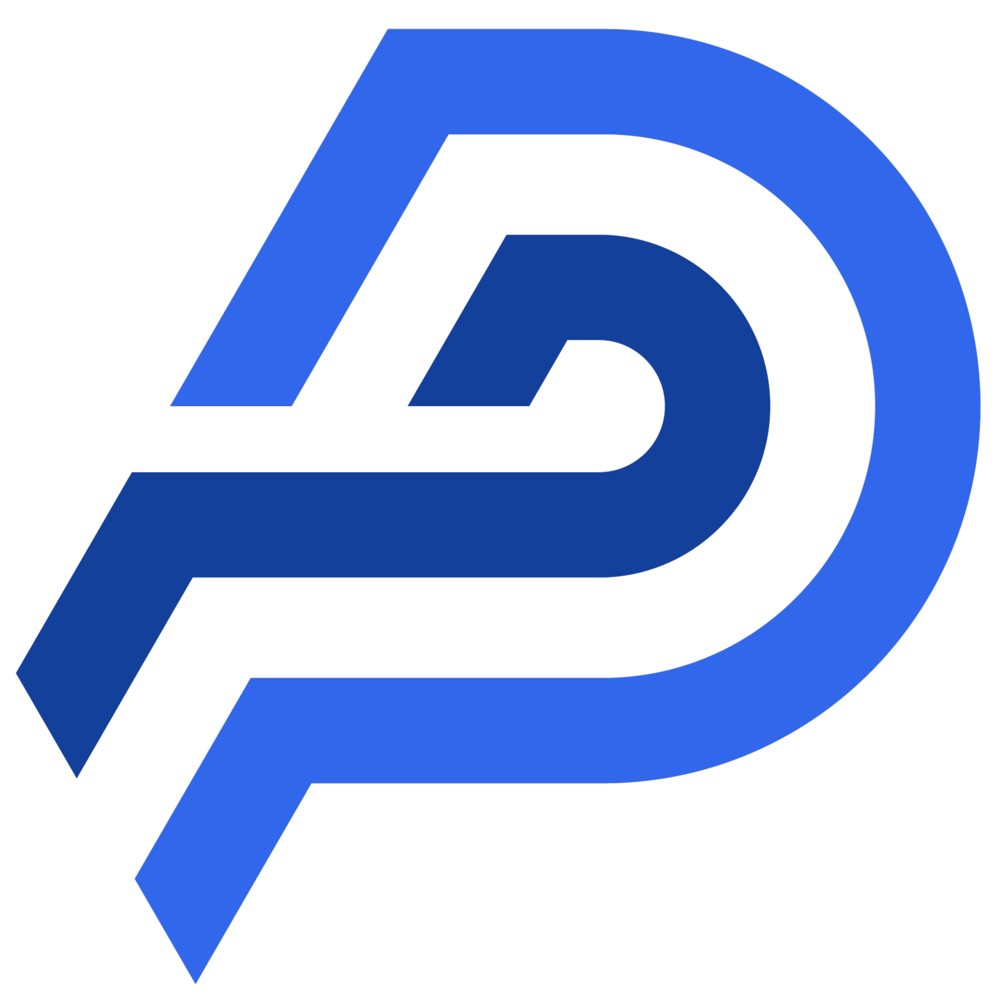

Company Overview | AI Product Pitch Deck
PT Gerbang Transaksi Digital (GTD)
Indonesia-based product company building applied AI infrastructure for regulated onboarding and conversational transaction workflows.
AI infrastructure for identity verification and conversational commerce in Indonesia.
GTD operates three products across its portfolio. This deck focuses on the two AI products driving GTD's near-term growth: Vison and Sona on PPOB.ID.
Focus: fintech onboarding and UMKM transaction automation
Jakarta, Indonesia
Primary workload: Vison
Portfolio: 3 products, 2 AI in scope
2 AI products
Vison for identity verification and Sona as the AI assistant layer built on top of PPOB.ID workflows.
1 shared base
Both products rely on GTD's common APIs, workflow controls, and operational infrastructure.
1 scaling goal
Turn model development, deployment readiness, and AI-assisted orchestration into pilot-ready product infrastructure.
Vison
AI-assisted eKYC and biometric verification workflows for regulated onboarding and risk review.
Liveness
Face match
Document OCR
Audit outputs

Sona on PPOB.ID
Indonesian-language transaction assistance layered on top of PPOB.ID workflows for reseller and commerce use cases.
Indonesian-language
Tool calling
Confirmation flow
Catalog execution
Current pitch focus
Two AI products, one shared operating stack
This deck highlights the GTD products most relevant for strategic support, pilot conversations, and early-stage fundraising.
Vison is the nearer-term infrastructure and go-to-market priority.
Sona extends the PPOB.ID base with controlled Indonesian-language transaction assistance.
Both products share GTD APIs, workflow controls, and operational infrastructure.
The goal is to move from promising product logic into pilot-ready, commercially credible execution.